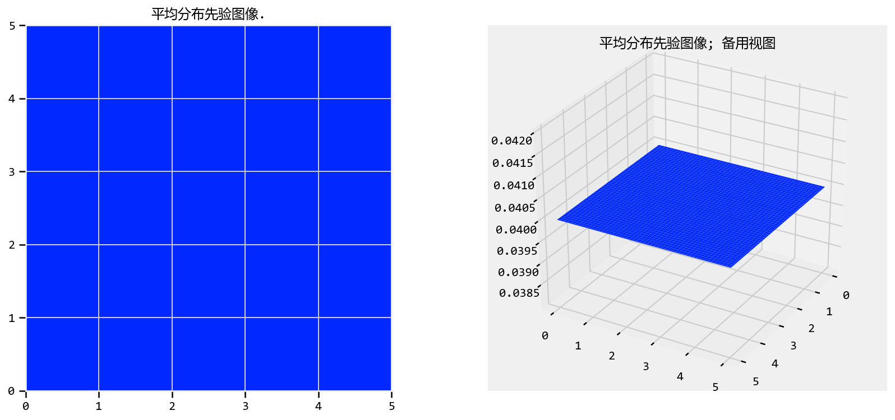
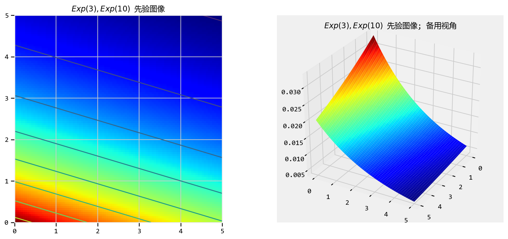
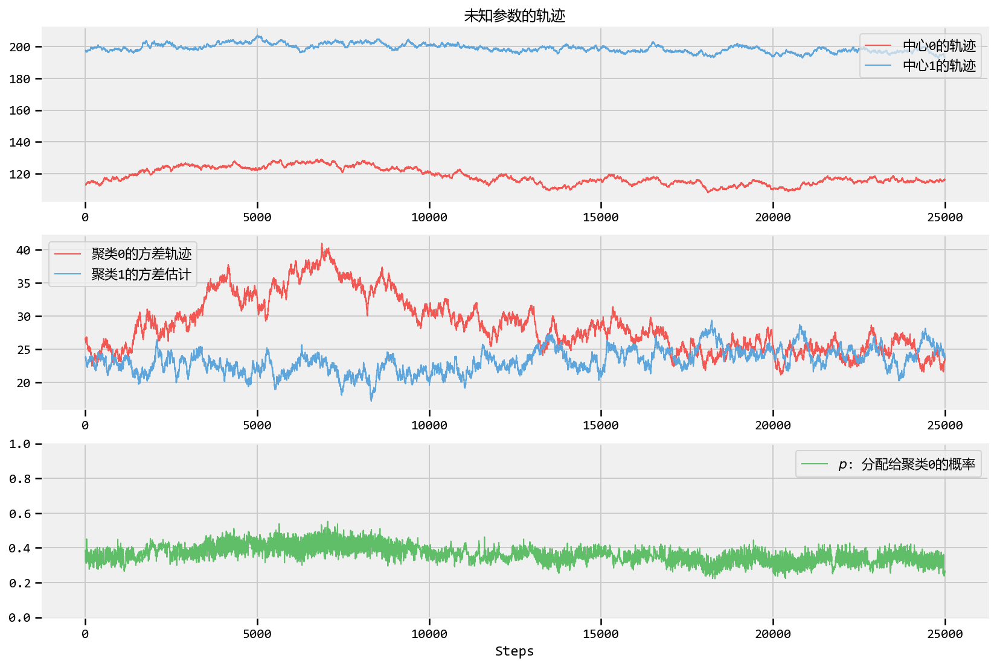
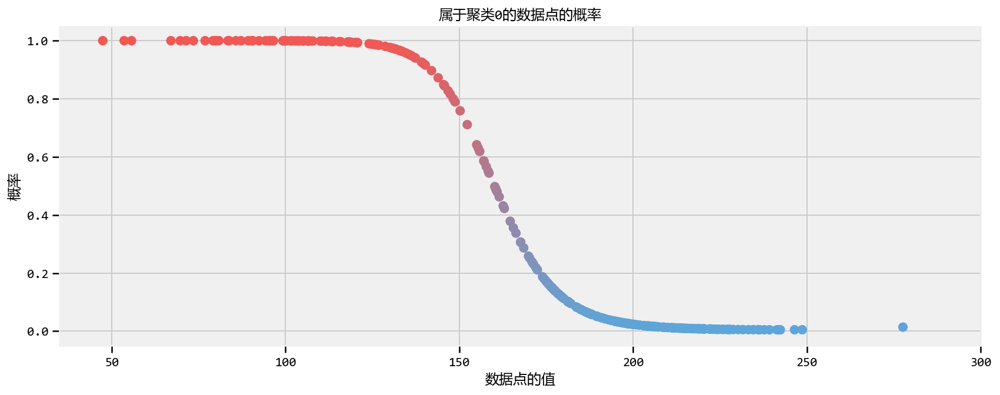
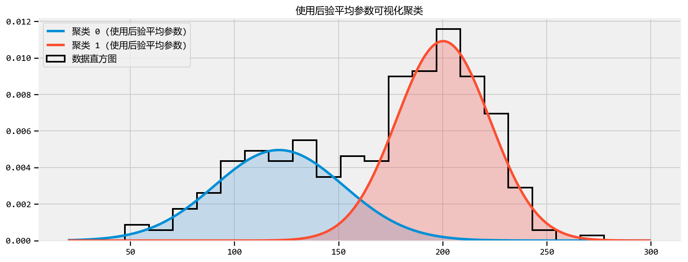
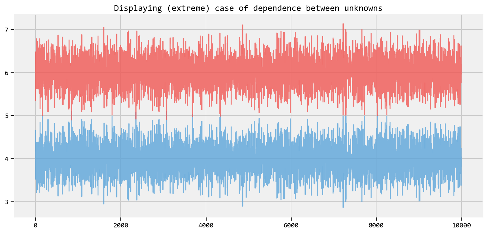
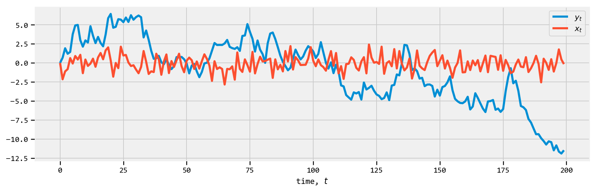
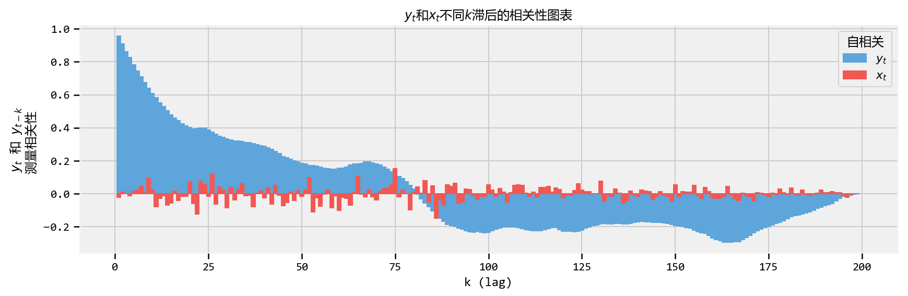

概率模型第三章 ： MCMC
Tensorflow 概率模型学习，代码运行于Tensorflow 1.14，文字半机器翻译。
Probabilistic Programming and Bayesian Methods for Hackers Chapter 3
Table of Contents
- Opening the black box of MCMC
- The Bayesian landscape
- Exploring the landscape using the MCMC
- Why Thousands of Samples?
- Algorithms to perform MCMC
- Other aproximation solutions to the posterior
- Example: Unsupervised Clustering Using a Mixture Model
- Cluster Investigation
- Important: Don’t mix posterior samples
- Returning to Clustering: Prediction
- Diagnosing Convergence
- Autocorrelation
- How does this relate to MCMC convergence?
- Thinning
- Additional Plotting Options
- Useful tips for MCMC
- Intelligent starting values
- Priors
- Covariance matrices and eliminating parameters
- The Folk Theorem of Statistical Computing
- Intelligent starting values
- Conclusion
- References
#@title Imports and Global Variables { display-mode: "form" }
"""
The book uses a custom matplotlibrc file, which provides the unique styles for
matplotlib plots. If executing this book, and you wish to use the book's
styling, provided are two options:
1. Overwrite your own matplotlibrc file with the rc-file provided in the
book's styles/ dir. See http://matplotlib.org/users/customizing.html
2. Also in the styles is bmh_matplotlibrc.json file. This can be used to
update the styles in only this notebook. Try running the following code:
import json
s = json.load(open("../styles/bmh_matplotlibrc.json"))
matplotlib.rcParams.update(s)
"""
#@markdown This sets the warning status (default is `ignore`, since this notebook runs correctly)
warning_status = "ignore" #@param ["ignore", "always", "module", "once", "default", "error"]
import warnings
warnings.filterwarnings(warning_status)
with warnings.catch_warnings():
warnings.filterwarnings(warning_status, category=DeprecationWarning)
warnings.filterwarnings(warning_status, category=UserWarning)
import numpy as np
import os
#@markdown This sets the styles of the plotting (default is styled like plots from [FiveThirtyeight.com](https://fivethirtyeight.com/))
matplotlib_style = 'fivethirtyeight' #@param ['fivethirtyeight', 'bmh', 'ggplot', 'seaborn', 'default', 'Solarize_Light2', 'classic', 'dark_background', 'seaborn-colorblind', 'seaborn-notebook']
import matplotlib as mpl
import matplotlib.pyplot as plt; plt.style.use(matplotlib_style)
import matplotlib.axes as axes;
from matplotlib.patches import Ellipse
from mpl_toolkits.mplot3d import Axes3D
import pandas_datareader.data as web
%matplotlib inline
plt.rcParams['font.sans-serif']=['YaHei Consolas Hybrid']
import seaborn as sns; sns.set_context('notebook')
from IPython.core.pylabtools import figsize
#@markdown This sets the resolution of the plot outputs (`retina` is the highest resolution)
notebook_screen_res = 'retina' #@param ['retina', 'png', 'jpeg', 'svg', 'pdf']
%config InlineBackend.figure_format = notebook_screen_res
import tensorflow as tf
tfe = tf.contrib.eager
# Eager Execution
#@markdown Check the box below if you want to use [Eager Execution](https://www.tensorflow.org/guide/eager)
#@markdown Eager execution provides An intuitive interface, Easier debugging, and a control flow comparable to Numpy. You can read more about it on the [Google AI Blog](https://ai.googleblog.com/2017/10/eager-execution-imperative-define-by.html)
use_tf_eager = False #@param {type:"boolean"}
# Use try/except so we can easily re-execute the whole notebook.
if use_tf_eager:
try:
tf.enable_eager_execution()
except:
pass
import tensorflow_probability as tfp
tfd = tfp.distributions
tfb = tfp.bijectors
def evaluate(tensors):
"""Evaluates Tensor or EagerTensor to Numpy `ndarray`s.
Args:
tensors: Object of `Tensor` or EagerTensor`s; can be `list`, `tuple`,
`namedtuple` or combinations thereof.
Returns:
ndarrays: Object with same structure as `tensors` except with `Tensor` or
`EagerTensor`s replaced by Numpy `ndarray`s.
"""
if tf.executing_eagerly():
return tf.contrib.framework.nest.pack_sequence_as(
tensors,
[t.numpy() if tf.contrib.framework.is_tensor(t) else t
for t in tf.contrib.framework.nest.flatten(tensors)])
return sess.run(tensors)
class _TFColor(object):
"""Enum of colors used in TF docs."""
red = '#F15854'
blue = '#5DA5DA'
orange = '#FAA43A'
green = '#60BD68'
pink = '#F17CB0'
brown = '#B2912F'
purple = '#B276B2'
yellow = '#DECF3F'
gray = '#4D4D4D'
def __getitem__(self, i):
return [
self.red,
self.orange,
self.green,
self.blue,
self.pink,
self.brown,
self.purple,
self.yellow,
self.gray,
][i % 9]
TFColor = _TFColor()
def session_options(enable_gpu_ram_resizing=True, enable_xla=True):
"""
Allowing the notebook to make use of GPUs if they're available.
XLA (Accelerated Linear Algebra) is a domain-specific compiler for linear
algebra that optimizes TensorFlow computations.
"""
config = tf.ConfigProto()
config.log_device_placement = True
if enable_gpu_ram_resizing:
# `allow_growth=True` makes it possible to connect multiple colabs to your
# GPU. Otherwise the colab malloc's all GPU ram.
config.gpu_options.allow_growth = True
if enable_xla:
# Enable on XLA. https://www.tensorflow.org/performance/xla/.
config.graph_options.optimizer_options.global_jit_level = (
tf.OptimizerOptions.ON_1)
return config
def reset_sess(config=None):
"""
Convenience function to create the TF graph & session or reset them.
"""
if config is None:
config = session_options()
global sess
tf.reset_default_graph()
try:
sess.close()
except:
pass
sess = tf.InteractiveSession(config=config)
reset_sess()打开MCMC的黑匣子
前两章隐藏了TFP的内部机制，更常见的是来自读者的Markov Chain Monte Carlo（MCMC）。包含本章的原因有三个方面。首先，任何关于贝叶斯推理的书都必须讨论MCMC。我不能打这个。责备统计学家。其次，了解MCMC的过程可以让您深入了解您的算法是否已融合（融合到什么？我们将达到这个目标）。第三，我们将理解为什么我们从后验返回了数千个样本作为解决方案，起初认为这可能是奇怪的。
贝叶斯图像
当我们用\(N\)未知数设置贝叶斯推理问题时，我们隐含地为先前的分布创建\(N\)维空间。与空间相关联是另一个维度，我们可以将其描述为曲面，或曲线，位于空间的顶部，反映特定点的先验概率。空间的表面由我们先前的分布定义。例如，如果我们有两个未知数\(p_1\)和\(p_2\)，并且两者的先验都是\(\text{Uniform}(0,5)\)，则创建的空间是长度为5的正方形，表面是平面位于正方形顶部（表示每个点都有可能）。
x_ = y_ = np.linspace(0., 5., 100., dtype=np.float32)
X_, Y_ = evaluate(tf.meshgrid(x_, y_))
uni_x_ = evaluate(tfd.Uniform(low=0., high=5.).prob(x_))
m_ = np.median(uni_x_)
uni_y_ = evaluate(tfd.Uniform(low=0., high=5.).prob(y_))
M_ = evaluate(tf.matmul(tf.expand_dims(uni_x_, 1), tf.expand_dims(uni_y_, 0)))
plt.figure(figsize(12.5, 6))
jet = plt.cm.jet
fig = plt.figure()
plt.subplot(121)
im = plt.imshow(M_, interpolation='none', origin='lower',
cmap=jet, vmax=1, vmin=-.15, extent=(0, 5, 0, 5))
plt.xlim(0, 5)
plt.ylim(0, 5)
plt.title("平均分布先验图像.")
ax = fig.add_subplot(122, projection='3d')
ax.plot_surface(X_, Y_, M_, cmap=plt.cm.jet, vmax=1, vmin=-.15)
ax.view_init(azim=390)
plt.title("平均分布先验图像; 备用视图");<Figure size 900x432 with 0 Axes>
或者，如果两个先验是$ （3）\(和\) （10）$，则该空间是2-D平面上的所有正数，并且由先验引起的表面看起来像一个从（0,0）点开始的水落，并流过正数。
下面的图表显示了这一点。越 红的颜色,表明越大的先验概率被分配到这个位置，反过来越 蓝 的地方表示我们分配的先验概率越小。
exp_x_ = evaluate(tfd.Exponential(rate=(1./3.)).prob(x_))
exp_y_ = evaluate(tfd.Exponential(rate=(1./10.)).prob(y_))
M_ = evaluate(tf.matmul(tf.expand_dims(exp_x_, 1), tf.expand_dims(exp_y_, 0)))
plt.figure(figsize(12.5, 6))
jet = plt.cm.jet
fig = plt.figure()
plt.subplot(121)
CS = plt.contour(X_, Y_, M_)
im = plt.imshow(M_, interpolation='none', origin='lower',
cmap=jet, extent=(0, 5, 0, 5))
plt.xlim(0, 5)
plt.ylim(0, 5)
plt.title(r"$Exp(3), Exp(10)$ 先验图像")
ax = fig.add_subplot(122, projection='3d')
ax.plot_surface(X_, Y_, M_, cmap=plt.cm.jet)
ax.view_init(azim=30)
plt.title(r"$Exp(3), Exp(10)$ 先验图像; 备用视角");<Figure size 900x432 with 0 Axes>
这些是2D空间中的简单示例，我们的大脑可以很好地理解表面。在实践中，由我们的先验可以生成的空间或表面等更高维度。
如果这些表面描述了未知数的先前分布，那么在我们合并观察到的数据\(X\)后，我们的空间会发生什么？数据\(X\)不会改变空间，但它通过拉动和拉伸先前曲面的结构来改变空间的表面，以反映真实参数可能存在的位置。更多的数据意味着更多的拉伸和拉伸，与新形成的形状相比，我们的原始形状变得严重或微不足道。数据越少，我们的原始形状就越多。无论如何，得到的表面描述了后验分布。
我必须再次强调，遗憾的是，不可能在大尺寸上将其可视化。对于两个维度，数据基本上向上推原始表面以形成高山。通过先验概率分布检查观测数据推高某些区域中的后验概率的趋势，因此较少的先验概率意味着更大的阻力。因此，在上面的双指数先验案例中，可能在（0,0）角附近爆发的山（或多个山）将比远离（5,5）的山脉高得多，因为那里在（5,5）附近有更大的阻力（低先验概率）。峰值反映了可能找到真实参数的后验概率。重要的是，如果先验已经指定概率为0，则不会在那里分配后验概率。
假设上面提到的先验代表两个泊松分布的不同参数$ $。我们观察了一些数据点并可视化新的图像：
# 创建观察变量
# 尝试改变采样数观察结果
N = 2 #param {type:"slider", min:1, max:15, step:1}
# 真正的参数，但当然我们没有看到这些值......
lambda_1_true = float(1.)
lambda_2_true = float(3.)
#...依据真实参数生成对应的分布
data = tf.concat([
tfd.Poisson(rate=lambda_1_true).sample(sample_shape=(N, 1), seed=4),
tfd.Poisson(rate=lambda_2_true).sample(sample_shape=(N, 1), seed=8)
], axis=1)
data_ = evaluate(data)
print("observed (2-dimensional,sample size = %d): \n" % N, data_)
# plotting details.
x_ = y_ = np.linspace(.01, 5, 100)
likelihood_x = tf.math.reduce_prod(tfd.Poisson(rate=x_).prob(data_[:,0][:,tf.newaxis]),axis=0)
likelihood_y = tf.math.reduce_prod(tfd.Poisson(rate=y_).prob(data_[:,1][:,tf.newaxis]),axis=0)
L_ = evaluate(tf.matmul(likelihood_x[:,tf.newaxis],likelihood_y[tf.newaxis,:]))observed (2-dimensional,sample size = 2):
[[3. 4.]
[1. 3.]]plt.figure(figsize(12.5, 15.0))
# matplotlib heavy lifting below, beware!
# SUBPLOT for regular Uniform
plt.subplot(221)
uni_x_ = evaluate(tfd.Uniform(low=0., high=5.).prob(tf.cast(x_,dtype=tf.float32)))
m = np.median(uni_x_[uni_x_ > 0])
uni_x_[uni_x_ == 0] = m
uni_y_ = evaluate(tfd.Uniform(low=0., high=5.).prob(tf.cast(y_,dtype=tf.float32)))
m = np.median(uni_y_[uni_y_ > 0])
uni_y_[uni_y_ == 0] = m
M_ = evaluate(tf.matmul(tf.expand_dims(uni_x_, 1), tf.expand_dims(uni_y_, 0)))
im = plt.imshow(M_, interpolation='none', origin='lower',
cmap=jet, vmax=1, vmin=-.15, extent=(0, 5, 0, 5))
plt.scatter(lambda_2_true, lambda_1_true, c="k", s=50, edgecolor="none")
plt.xlim(0, 5)
plt.ylim(0, 5)
plt.title(r"$p_1, p_2$平均先验图像")
# SUBPLOT for Uniform + Data point
plt.subplot(223)
plt.contour(x_, y_, M_ * L_)
im = plt.imshow(M_ * L_, interpolation='none', origin='lower',
cmap=jet, extent=(0, 5, 0, 5))
plt.title("图像被%d个数据而扭曲;\n $p_1, p_2$.的平均先验" % N)
plt.scatter(lambda_2_true, lambda_1_true, c="k", s=50, edgecolor="none")
plt.xlim(0, 5)
plt.ylim(0, 5)
# SUBPLOT for regular Exponential
plt.subplot(222)
exp_x_ = evaluate(tfd.Exponential(rate=.3).prob(tf.to_float(x_)))
exp_x_[np.isnan(exp_x_)] = exp_x_[1]
exp_y_ = evaluate(tfd.Exponential(rate=.10).prob(tf.to_float(y_)))
exp_y_[np.isnan(exp_y_)] = exp_y_[1]
M_ = evaluate(tf.matmul(tf.expand_dims(exp_x_, 1), tf.expand_dims(exp_y_, 0)))
plt.contour(x_, y_, M_)
im = plt.imshow(M_, interpolation='none', origin='lower',
cmap=jet, extent=(0, 5, 0, 5))
plt.scatter(lambda_2_true, lambda_1_true, c="k", s=50, edgecolor="none")
plt.xlim(0, 5)
plt.ylim(0, 5)
plt.title("$p_1, p_2$的指数先验图像")
# SUBPLOT for Exponential + Data point
plt.subplot(224)
# This is the likelihood times prior, that results in the posterior.
plt.contour(x_, y_, M_ * L_)
im = plt.imshow(M_ * L_, interpolation='none', origin='lower',
cmap=jet, extent=(0, 5, 0, 5))
plt.scatter(lambda_2_true, lambda_1_true, c="k", s=50, edgecolor="none")
plt.title("图像被%d个数据扭曲;\n $p_1, p_2$的指数先验" % N)
plt.xlim(0, 5)
plt.ylim(0, 5);
左边的图是带有$ （0,5）$ 先验的变形图像，右边的图是带有指数先验的变形景观。请注意，后方景观看起来彼此不同，尽管观察到的数据在两种情况下都是相同的。原因如下。注意指数先验的图像，右上图，在图的右上角的值上放置非常小的后验权重：这是因为先验在那里没有太大的权重。另一方面，均匀先验的图像很乐意将后部权重放在右上角，因为之前的重量更重。
另请注意，对应最暗的红色的最高点在指数情况下偏向于（0,0），这是指数先验在（0,0）角落放置更多先前权重的结果。
黑点代表真实的参数。即使有1个样本点，山也会尝试包含真实参数。当然，样本大小为“1”的推断非常幼稚，选择如此小的样本量只是说明性的。
尝试将样本大小更改为其他值（尝试2,5,10,100？…）并观察我们的山峰后验如何变化是一个很好的练习。
使用MCMC探索图像
我们应该探索我们先验表面和产生的变形后图像和观测数据，以找到后验。但是，我们不能天真地搜索空间：任何计算机科学家都会告诉你，在\(N\)中遍历\(N\)维空间是指数级的难度：当我们增加\(N\)时，空间的大小很快就会爆炸（the curse of dimensionality）。我们有什么希望找到这些隐藏的山脉？ MCMC背后的想法是对空间进行智能搜索。说“搜索”意味着我们正在寻找一个特定的点，这可能不准确，因为我们真的在寻找一座宽阔的山峰。
回想一下，MCMC从后验分布返回样本，而不是分布本身。将我们的山区类比延伸至极限，MCMC执行类似于反复询问“我发现这块鹅卵石有多大可能来自我正在寻找的山脉？”的任务，并通过返回数千个可接受的鹅卵石来完成其任务，以期重建原始的山。
当我说MCMC智能搜索时，我真的在说MCMC将希望会聚到高后验概率区域。 MCMC通过探索附近的位置并进入更高概率的区域来做到这一点。同样，也许“收敛”并不是描述MCMC进展的准确术语。收敛通常意味着朝向空间中的一个点移动，但是MCMC向空间中的更宽的区域移动并随机地在该区域中行走，从该区域拾取样本。
为什么数以千计的样本？
首先，向用户返回数千个样本可能听起来像是描述后验分布的低效方式。我认为这非常有效。考虑其他可能性：
- 返回“山脉”的数学公式将涉及描述具有任意峰和谷的N维表面。
- 返回图像的“峰值”，虽然在数学上可能并且作为最高点的合理事情对应于未知数的最可能估计，但忽略了景观的形状，我们之前认为这对于确定后验置信度非常重要在未知数。
除了计算原因，返回样本的最有力理由可能是我们可以轻松使用大数定律来解决其他棘手的问题。我推迟了下一章的讨论。通过数千个样本，我们可以通过在直方图中组织它们来重建后表面。
执行MCMC的算法
有一大系列算法可以执行MCMC。这些算法中的大多数可以高级表达如下:(数学细节可以在附录中找到。）
- 从当前位置开始。
- 建议搬到新的位置（调查你附近的鹅卵石）。
- 根据位置对数据和先前分布的遵守情况接受/拒绝新位置（询问卵石是否可能来自山区）。
- 如果您接受：移动到新位置。返回第1步。
- 否则：不要搬到新的位置。返回第1步。
- 经过大量迭代后，返回所有接受的位置。
这样，我们朝向存在后验分布的区域的大致方向移动，并且在旅程中节省地收集样本。一旦我们到达后验分布，我们就可以轻松地收集样本，因为它们可能都属于后验分布。
如果MCMC算法的当前位置处于极低概率的区域（这通常是算法开始时的情况（通常在空间中的随机位置），则算法将移动到可能不是来自后验但比附近的其他所有更好。因此算法的第一次移动不反映后验。
在上述算法的伪代码中，请注意只有当前位置很重要（仅在当前位置附近调查新位置）。我们可以将这个属性描述为无记忆，即算法不关心它如何到达当前位置，只是它在那里。
后验的其他近似解
除MCMC外，还有其他程序可用于确定后验分布。拉普拉斯近似是使用简单函数的后验近似。更先进的方法是变分贝叶斯.
所有三种方法，拉普拉斯近似，变分贝叶斯和经典MCMC都有其优缺点。我们在本书中只关注MCMC。
Example: 使用混合模型的无监督聚类
假设我们得到以下数据集：
reset_sess()
import wget
url = 'https://raw.githubusercontent.com/CamDavidsonPilon/Probabilistic-Programming-and-Bayesian-Methods-for-Hackers/master/Chapter3_MCMC/data/mixture_data.csv'
filename = wget.download(url)
filename'mixture_data.csv'plt.figure(figsize(12.5, 6))
data_ = np.loadtxt("mixture_data.csv", delimiter=",")
plt.hist(data_, bins=20, color="k", histtype="stepfilled", alpha=0.8)
plt.title("数据集的直方图")
plt.ylim([0, None]);
print(data_[:10], "...")[115.85679142 152.26153716 178.87449059 162.93500815 107.02820697
105.19141146 118.38288501 125.3769803 102.88054011 206.71326136] ...
数据表明了什么？看起来数据具有双峰形式，也就是说，它似乎有两个峰值，一个接近120，另一个接近200。也许在这个数据集中有两个簇。
该数据集是上一章中数据生成建模技术的一个很好的例子。我们可以提出如何创建数据。我建议使用以下数据生成算法：
- 对于每个数据点，选择概率为\(p\)的集群1，否则选择集群2。
- 使用参数$ _i \(和\) _i \(从Normal分布中绘制随机变量，其中\) i $在步骤1中选择。
- 重复.
该算法将产生与观察数据集类似的效果，因此我们选择此作为我们的模型。当然，我们不知道\(p\)或Normal分布的参数。因此，我们必须推断或学习这些未知数。
表示正态分布$ _0 \(和\) _1 \(。两者目前都有未知的均值和标准差，表示为\) _i \(和\) _i，; i = 0,1 \(。特定数据点可以来自\) _0 \(或\) _1 \(，我们假设数据点以\) p \(的概率分配给\) _0 $。
将数据点分配给集群的适当方法是使用TF分类变量它的参数是一个长为$ k \(概率数组，必须总和为1，它的`value`属性是一个在0和\)k-1\(之间的整数，根据精心设计的概率数据随机选择（在我们的例子中为\) K = 2 \(）。 对于*先验*，我们不知道分配给集群1的概率是多少，所以我们在\)（0,1）\(上形成一个统一变量。我们称之为\)p_1\(，因此属于群集2的概率为\)p_2 = 1 - p_1$。
幸运的是，我们可以将[p1，p2]赋予我们的Categorical变量。如果需要，我们也可以使用tf.stack（）将$ p_1 \(和\) p_2 $组合成一个它能理解的向量。我们将此向量传递给Categorical变量，以便了解从多个分布中进行选择的可能性。
p1 = tfd.Uniform(name='p', low=0., high=1.).sample() # p1 概率
p2 = 1 - p1 # # p1 概率
p = tf.stack([p1, p2]) # 串联
rv_assignment = tfd.Categorical(name="assignment",probs=p) #
assignment = rv_assignment.sample(sample_shape=data_.shape[0])
[p_,assignment_] = evaluate([p,assignment])
print("先验分配, with p = %.2f:" % p_[0])
print (assignment_[:10])先验分配, with p = 0.16: [0 1 0 0 1 0 1 0 1 1]
看看上面的数据集，我猜想两个法线的标准偏差是不同的。为了保持对标准偏差的未知，我们最初将它们模型化为0到100。我们将使用单行TFP代码在我们的模型中包含两个标准偏差：
rv_sds = tfd.Uniform(name="rv_sds", low=[0., 0.], high=[100., 100.])在这里，我们使用批量形状2，创建两个独立的分布，恰好具有相同的参数。查看 colab on TFP shapes 得到更多信息.
我们还需要在集群的中心指定先验。这些正常分布中的中心实际上是\(\mu\)参数。他们的先验可以通过正态分布建模。看看这些数据，我知道这两个中心可能在哪里；虽然我对这些看起来的估计并不十分自信，但我猜的分别在120左右和190左右。因此我将设置\(\mu_0 = 120,\mu_1 = 190\)和\(\sigma_0 = \sigma_1 = 10\)。
最后，我们使用了MixtureSameFamily 分布以实现我们的两个正态分布的混合, 使用我们的 Categorical 分布作为我们的选择功能。
rv_sds = tfd.Uniform(name="rv_sds", low=[0., 0.], high=[100., 100.])
print (str(rv_sds))
rv_centers = tfd.Normal(name="rv_centers", loc=[120., 190.], scale=[10., 10.])
sds = rv_sds.sample()
print ("shape of sds sample:",sds.shape)
centers = rv_centers.sample()
rv_assignments = tfd.Categorical(probs=tf.stack([0.4, 0.6]))
assignments = rv_assignments.sample(sample_shape=10)
# and to combine it with the observations:
rv_observations = tfd.MixtureSameFamily(
mixture_distribution=rv_assignments,
components_distribution=tfd.Normal(
loc=centers,
scale=sds))
observations = rv_observations.sample(sample_shape=10)
[
assignments_,
observations_,
sds_,
centers_
] = evaluate([
assignments,
observations,
sds,
centers
])
print("simulated data: ", observations_[:4], "...")
print("Random assignments: ", assignments_[:4], "...")
print("Assigned center: ", centers_[:4], "...")
print("Assigned standard deviation: ", sds_[:4],"...")tfp.distributions.Uniform("rv_sds/", batch_shape=[2], event_shape=[], dtype=float32)
shape of sds sample: (2,)
simulated data: [143.32745 203.31703 138.44893 157.09035] ...
Random assignments: [1 0 0 0] ...
Assigned center: [140.52045 187.54768] ...
Assigned standard deviation: [34.886158 39.296032] ...类似地，在下面的联合log_prob函数中，我们创建了两个集群，每个集群都有我们在中心和标准偏差上的先验。 然后，我们根据我们的Categorical变量确定的权重按比例混合它们创造了高斯分布的混合体。最后，对于每个数据点，我们从该混合分布生成样本。
请注意，此模型将群集分配变量边缘化，这样所有剩余的随机变量都是连续的，这使得它特别适合简单的MCMC– HamiltonianMonteCarlo
def joint_log_prob(data_, sample_prob_1, sample_centers, sample_sds):
"""
Joint log probability optimization function.
Args:
data: tensor array representation of original data
sample_prob_1: Scalar representing probability (out of 1.0) of assignment
being 0
sample_sds: 2d vector containing standard deviations for both normal dists
in model
sample_centers: 2d vector containing centers for both normal dists in model
Returns:
Joint log probability optimization function.
"""
### Create a mixture of two scalar Gaussians:
rv_prob = tfd.Uniform(name='rv_prob', low=0., high=1.)
sample_prob_2 = 1. - sample_prob_1
rv_assignments = tfd.Categorical(probs=tf.stack([sample_prob_1, sample_prob_2]))
rv_sds = tfd.Uniform(name="rv_sds", low=[0., 0.], high=[100., 100.])
rv_centers = tfd.Normal(name="rv_centers", loc=[120., 190.], scale=[10., 10.])
rv_observations = tfd.MixtureSameFamily(
mixture_distribution=rv_assignments,
components_distribution=tfd.Normal(
loc=sample_centers, # One for each component.
scale=sample_sds)) # And same here.
return (
rv_prob.log_prob(sample_prob_1)
+ rv_prob.log_prob(sample_prob_2)
+ tf.reduce_sum(rv_observations.log_prob(data_)) # Sum over samples.
+ tf.reduce_sum(rv_centers.log_prob(sample_centers)) # Sum over components.
+ tf.reduce_sum(rv_sds.log_prob(sample_sds)) # Sum over components.
)我们将使用我们的HMC采样方法，通过使用下面的25000个样本迭代来探索空间。
number_of_steps=25000 #@param {type:"slider", min:0, max:50000, step:1000}
burnin=1000 #@param {type:"slider", min:0, max:2000, step:100}
num_leapfrog_steps=3
# Set the chain's start state.
initial_chain_state = [
tf.constant(0.5, name='init_probs'),
tf.constant([120., 190.], name='init_centers'),
tf.constant([10., 10.], name='init_sds')
]
# Since MCMC operates over unconstrained space, we need to transform the
# samples so they live in real-space.
unconstraining_bijectors = [
tfp.bijectors.Identity(), # Maps R to R.
tfp.bijectors.Identity(), # Maps R to R.
tfp.bijectors.Identity(), # Maps R to R.
]
# Define a closure over our joint_log_prob.
unnormalized_posterior_log_prob = lambda *args: joint_log_prob(data_, *args)
# Initialize the step_size. (It will be automatically adapted.)
with tf.variable_scope(tf.get_variable_scope(), reuse=tf.AUTO_REUSE):
step_size = tf.get_variable(
name='step_size',
initializer=tf.constant(0.5, dtype=tf.float32),
trainable=False,
use_resource=True
)
# Defining the HMC
hmc=tfp.mcmc.TransformedTransitionKernel(
inner_kernel=tfp.mcmc.HamiltonianMonteCarlo(
target_log_prob_fn=unnormalized_posterior_log_prob,
num_leapfrog_steps=num_leapfrog_steps,
step_size=step_size,
step_size_update_fn=tfp.mcmc.make_simple_step_size_update_policy(num_adaptation_steps=int(burnin * 0.8)),
state_gradients_are_stopped=True),
bijector=unconstraining_bijectors)
# Sample from the chain.
[
posterior_prob,
posterior_centers,
posterior_sds
], kernel_results = tfp.mcmc.sample_chain(
num_results=number_of_steps,
num_burnin_steps=burnin,
current_state=initial_chain_state,
kernel=hmc)
# Initialize any created variables.
init_g = tf.global_variables_initializer()
init_l = tf.local_variables_initializer()W0727 20:52:11.363048 140336188528448 deprecation.py:323] From <ipython-input-31-144a4acba7c5>:39: make_simple_step_size_update_policy (from tensorflow_probability.python.mcmc.hmc) is deprecated and will be removed after 2019-05-22.
Instructions for updating:
Use tfp.mcmc.SimpleStepSizeAdaptation instead.
W0727 20:52:11.368744 140336188528448 deprecation.py:506] From <ipython-input-31-144a4acba7c5>:40: calling HamiltonianMonteCarlo.__init__ (from tensorflow_probability.python.mcmc.hmc) with step_size_update_fn is deprecated and will be removed after 2019-05-22.
Instructions for updating:
The `step_size_update_fn` argument is deprecated. Use `tfp.mcmc.SimpleStepSizeAdaptation` instead.evaluate(init_g)
evaluate(init_l)
[
posterior_prob_,
posterior_centers_,
posterior_sds_,
kernel_results_
] = evaluate([
posterior_prob,
posterior_centers,
posterior_sds,
kernel_results
])
new_step_size_initializer_ = kernel_results_.inner_results.is_accepted.mean()
print("接受率: {}".format(
new_step_size_initializer_))
new_step_size_initializer_
print("结束步: {}".format(
kernel_results_.inner_results.extra.step_size_assign[-100:].mean()))接受率: 0.7698
结束步: 0.052764225751161575让我们检查未知参数的迹线。换句话说，到目前为止，未知参数（中心，精度和p）的路线已经采用。
plt.figure(figsize(12.5, 9))
plt.subplot(311)
lw = 1
center_trace = posterior_centers_
# for pretty colors later in the book.
colors = [TFColor[3], TFColor[0]] if center_trace[-1, 0] > center_trace[-1, 1] \
else [TFColor[0], TFColor[3]]
plt.plot(center_trace[:, 0], label="中心0的轨迹", c=colors[0], lw=lw)
plt.plot(center_trace[:, 1], label="中心1的轨迹", c=colors[1], lw=lw)
plt.title("未知参数的轨迹")
leg = plt.legend(loc="upper right")
leg.get_frame().set_alpha(0.7)
plt.subplot(312)
std_trace = posterior_sds_
plt.plot(std_trace[:, 0], label="聚类0的方差轨迹",
c=colors[0], lw=lw)
plt.plot(std_trace[:, 1], label="聚类1的方差估计",
c=colors[1], lw=lw)
plt.legend(loc="upper left")
plt.subplot(313)
p_trace = posterior_prob_
plt.plot(p_trace, label="$p$: 分配给聚类0的概率",
color=TFColor[2], lw=lw)
plt.xlabel("Steps")
plt.ylim(0, 1)
plt.legend();
请注意以下特征： 1. 迹线会聚，而不是单个点，而是概率点的分布。这是MCMC算法中的* 收敛 。 2. 使用前几千个点的推断是一个坏主意，因为它们与我们感兴趣的最终分布无关。因此，在使用样本进行推断之前丢弃这些样本是个好主意。我们在收敛老化期*之前称这个时期。 3. 迹线显示为围绕空间的随机“行走”，即，路径表现出与先前位置的相关性。这既好又坏。我们将始终在当前位置和之前的位置之间建立相关性，但是太多意味着我们没有很好地探索空间。这将在本章后面的“诊断”部分详细介绍。
为了实现进一步的融合，我们将执行更多的MCMC步骤。在上面MCMC的伪代码算法中，唯一重要的位置是当前位置（在当前位置附近调查新位置）。为了继续我们离开的地方，我们将未知参数的当前值传递给initial_chain_state（）变量。我们已经计算过的值不会被覆盖。这样可以确保我们的采样在停止的地方继续进行。
我们将对MCMC进行五万次采样，并将以下进度可视化：
number_of_steps=50000 #@param {type:"slider", min:0, max:50000, step:1000}
burnin=10000 #@param {type:"slider", min:0, max:2000, step:100}
# Set the chain's start state.
initial_chain_state = [
tf.constant(posterior_prob_[-1], name='init_probs_2'),
tf.constant(posterior_centers_[-1], name='init_centers_2'),
tf.constant(posterior_sds_[-1], name='init_sds_2')
]
# Initialize the step_size. (It will be automatically adapted.)
with tf.variable_scope(tf.get_variable_scope(), reuse=tf.AUTO_REUSE):
step_size = tf.get_variable(
name='step_size_2',
#initializer=tf.constant(new_step_size_initializer_, dtype=tf.float32),
initializer=tf.constant(0.5, dtype=tf.float32),
trainable=False,
use_resource=True
)
step_size_update_fn=tfp.mcmc.make_simple_step_size_update_policy(num_adaptation_steps=int(burnin * 0.8))
# Defining the HMC
hmc=tfp.mcmc.TransformedTransitionKernel(
inner_kernel=tfp.mcmc.HamiltonianMonteCarlo(
target_log_prob_fn=unnormalized_posterior_log_prob,
num_leapfrog_steps=num_leapfrog_steps,
step_size=step_size,
step_size_update_fn=step_size_update_fn,
state_gradients_are_stopped=True),
bijector=unconstraining_bijectors)
# Sample from the chain.
[
posterior_prob_2,
posterior_centers_2,
posterior_sds_2
], kernel_results = tfp.mcmc.sample_chain(
num_results=number_of_steps,
num_burnin_steps=burnin,
current_state=initial_chain_state,
kernel=hmc)
# Initialize any created variables.
init_g = tf.global_variables_initializer()
init_l = tf.local_variables_initializer()
evaluate(init_g)
evaluate(init_l)
[
posterior_prob_2_,
posterior_centers_2_,
posterior_sds_2_,
kernel_results_
] = evaluate([
posterior_prob_2,
posterior_centers_2,
posterior_sds_2,
kernel_results
])
print("acceptance rate: {}".format(
kernel_results_.inner_results.is_accepted.mean()))
new_step_size_initializer_
print("final step size: {}".format(
kernel_results_.inner_results.extra.step_size_assign[-100:].mean()))acceptance rate: 0.60624 final step size: 0.05713607743382454
plt.figure(figsize(12.5, 4))
center_trace = posterior_centers_2_
prev_center_trace = posterior_centers_
x = np.arange(25000)
plt.plot(x, prev_center_trace[:, 0], label="之前的中心0轨迹",
lw=lw, alpha=0.4, c=colors[1])
plt.plot(x, prev_center_trace[:, 1], label="之前的中心1轨迹",
lw=lw, alpha=0.4, c=colors[0])
x = np.arange(25000, 75000)
plt.plot(x, center_trace[:, 0], label="中心0的新轨迹", lw=lw, c="#5DA5DA")
plt.plot(x, center_trace[:, 1], label="中心1的新轨迹", lw=lw, c="#F15854")
plt.title("未知中心参数的痕迹")
leg = plt.legend(loc="upper right")
leg.get_frame().set_alpha(0.8)
plt.xlabel("Steps");
聚类调查
我们没有忘记我们的主要挑战：确定聚类。我们确定了未知数的后验分布。我们绘制下面的中心和标准差变量的后验分布：
plt.figure(figsize(12.5, 8))
std_trace = posterior_sds_2_
prev_std_trace = posterior_sds_
_i = [1, 2, 3, 4]
for i in range(2):
plt.subplot(2, 2, _i[2 * i])
plt.title("聚类%d的后验" % i)
plt.hist(center_trace[:, i], color=colors[i], bins=30,
histtype="stepfilled")
plt.subplot(2, 2, _i[2 * i + 1])
plt.title("聚类%d方差的后验" % i)
plt.hist(std_trace[:, i], color=colors[i], bins=30,
histtype="stepfilled")
# plt.autoscale(tight=True)
plt.tight_layout()
MCMC算法提出两个聚类中最可能的中心分别接近120和200。类似的推断可以应用于标准偏差。
在本章的PyMC3版本中，我们描述了每个数据点的标签的后验分布。但是，在我们的TFP版本中，由于我们的模型边缘化了赋值变量，因此我们没有来自MCMC的该变量的迹线。
作为替代，下面我们可以在分配上生成后验预测分布，然后从中生成一些样本。
以下是对此的可视化。 y轴代表来自后验预测分布的样本。 x轴是原始数据点的排序值。红色方块是对簇0的赋值，蓝色方块是对簇1的赋值。
# 将数据放入张量
data = tf.constant(data_,dtype=tf.float32)
data = data[:,tf.newaxis]
# 他根据MCMC链生成一个聚类
rv_clusters_1 = tfd.Normal(posterior_centers_2_[:, 0], posterior_sds_2_[:, 0])
rv_clusters_2 = tfd.Normal(posterior_centers_2_[:, 1], posterior_sds_2_[:, 1])
#计算每个群集的对数概率
cluster_1_log_prob = rv_clusters_1.log_prob(data) + tf.math.log(posterior_prob_2_)
cluster_2_log_prob = rv_clusters_2.log_prob(data) + tf.math.log(1. - posterior_prob_2_)
x = tf.stack([cluster_1_log_prob, cluster_2_log_prob],axis=-1)
y = tf.math.reduce_logsumexp(x,-1)
# 贝叶斯规则计算分配概率：P（cluster = 1 | data）αP（data | cluster = 1）P（cluster = 1）
log_p_assign_1 = cluster_1_log_prob - tf.math.reduce_logsumexp(tf.stack([cluster_1_log_prob, cluster_2_log_prob], axis=-1), -1)
# 整个MCMC链的平均值
log_p_assign_1 = tf.math.reduce_logsumexp(log_p_assign_1, -1) - tf.math.log(tf.cast(log_p_assign_1.shape[-1], tf.float32))
p_assign_1 = tf.exp(log_p_assign_1)
p_assign = tf.stack([p_assign_1,1-p_assign_1],axis=-1)
# for charting
probs_assignments = p_assign_1 burned_assignment_trace_ = evaluate(tfd.Categorical(probs=p_assign).sample(sample_shape=200))
plt.figure(figsize(12.5, 5))
plt.cmap = mpl.colors.ListedColormap(colors)
plt.imshow(burned_assignment_trace_[:, np.argsort(data_)],
cmap=plt.cmap, aspect=.4, alpha=.9)
plt.xticks(np.arange(0, data_.shape[0], 40),
["%.2f" % s for s in np.sort(data_)[::40]])
plt.ylabel("后验样本")
plt.xlabel("第$i$个数据点的值")
plt.title("数据点的后验标签");
看看上面的绘图，似乎最不确定性在150到170之间。上面的绘图略微歪曲事物，因为x轴不是真正的比例（它显示第\(i\)排序数据点的值。 ）下面是一个更清晰的图表，我们估算了属于标签0和1的每个数据点的频率。
plt.figure(figsize(12.5, 5))
cmap = mpl.colors.LinearSegmentedColormap.from_list("BMH", colors)
assign_trace = evaluate(probs_assignments)[np.argsort(data_)]
plt.scatter(data_[np.argsort(data_)], assign_trace, cmap=cmap,
c=(1 - assign_trace), s=50)
plt.ylim(-0.05, 1.05)
plt.xlim(35, 300)
plt.title("属于聚类0的数据点的概率")
plt.ylabel("概率")
plt.xlabel("数据点的值");
即使我们使用正态分布对集群进行建模，我们也没有得到最佳适合数据的正态分布（无论我们的最佳定义是什么），而是正态分布的值的分布。我们如何才能为均值和方差选择一对值并确定八九不离十的高斯分布？
一种快速而肮脏的方式（我们将在第5章中看到它具有很好的理论属性），就是使用后验分布的mean。下面我们使用我们观察到的数据覆盖正态密度函数，使用后验分布的平均值作为所选参数：
x_ = np.linspace(20, 300, 500)
posterior_center_means_ = evaluate(tf.reduce_mean(posterior_centers_2_, axis=0))
posterior_std_means_ = evaluate(tf.reduce_mean(posterior_sds_2_, axis=0))
posterior_prob_mean_ = evaluate(tf.reduce_mean(posterior_prob_2_, axis=0))
plt.hist(data_, bins=20, histtype="step", density=True, color="k",
lw=2, label="数据直方图")
y_ = posterior_prob_mean_ * evaluate(tfd.Normal(loc=posterior_center_means_[0],
scale=posterior_std_means_[0]).prob(x_))
plt.plot(x_, y_, label="聚类 0 (使用后验平均参数)", lw=3)
plt.fill_between(x_, y_, color=colors[1], alpha=0.3)
y_ = (1 - posterior_prob_mean_) * evaluate(tfd.Normal(loc=posterior_center_means_[1],
scale=posterior_std_means_[1]).prob(x_))
plt.plot(x_, y_, label="聚类 1 (使用后验平均参数)", lw=3)
plt.fill_between(x_, y_, color=colors[0], alpha=0.3)
plt.legend(loc="upper left")
plt.title("使用后验平均参数可视化聚类");
重要提示：不要混合后验样本
在上面的示例中，可能的（尽管不太可能）场景是聚类0具有非常大的标准偏差，聚类1具有小的标准偏差。这仍然可以满足证据，尽管不如我们原来的推论那么多。或者，由于数据根本不支持这一假设，因此两个分布都不太可能具有较小的标准偏差。因此，两个标准偏差相互依赖：如果一个很小，另一个必须很大。事实上，所有未知数都以类似的方式相关。例如，如果标准偏差很大，则均值具有更宽的可能实现空间。相反，较小的标准偏差将平均值限制在较小的区域。
在MCMC期间，我们返回的矢量代表来自未知后验的样本。不同矢量的元素不能一起使用，因为这会破坏上述逻辑：可能样本已经返回，聚类1具有小的标准偏差，因此该样本中的所有其他变量将合并并相应地进行调整。但是很容易避免这个问题，只需确保正确索引跟踪。
另一个小例子来说明这一点。假设两个变量\(x\)和\(y\)通过\(x + y = 10\)相关联。我们将\(x\)建模为普通随机变量，均值为4，并探索500个样本。
number_of_steps = 10000 #@param {type:"slider", min:0, max:20000, step:1000}
burnin = 500 #@param {type:"slider", min:0, max:500, step:100}
# Set the chain's start state.
initial_chain_state = [
tf.to_float(1.) * tf.ones([], name='init_x', dtype=tf.float32),
]
# Initialize the step_size. (It will be automatically adapted.)
with tf.variable_scope(tf.get_variable_scope(), reuse=tf.AUTO_REUSE):
step_size = tf.get_variable(
name='step_size',
initializer=tf.constant(0.5, dtype=tf.float32),
trainable=False,
use_resource=True
)
step_size_update_fn=tfp.mcmc.make_simple_step_size_update_policy(num_adaptation_steps=int(burnin * 0.8))
# Defining the HMC
# Since we're only using one distribution for our simplistic example,
# the use of the bijectors and unnormalized log_prob function is
# unneccesary
#
# While not a good example of what to do if you have dependent
# priors, this IS a good example of how to set up just one variable
# with a simple distribution
hmc=tfp.mcmc.HamiltonianMonteCarlo(
target_log_prob_fn=tfd.Normal(name="rv_x", loc=tf.to_float(4.),
scale=tf.to_float(1./np.sqrt(10.))).log_prob,
num_leapfrog_steps=2,
step_size=step_size,
step_size_update_fn=step_size_update_fn,
state_gradients_are_stopped=True)
# Sampling from the chain.
[
x_samples,
], kernel_results = tfp.mcmc.sample_chain(
num_results = number_of_steps,
num_burnin_steps = burnin,
current_state=initial_chain_state,
kernel=hmc,
name='HMC_sampling'
)
y_samples = 10 - x_samples
# Initialize any created variables for preconditions
init_g = tf.global_variables_initializer()
#Running
evaluate(init_g)
[
x_samples_,
y_samples_,
] = evaluate([
x_samples,
y_samples,
])
plt.figure(figsize=(12,6))
plt.plot(np.arange(number_of_steps), x_samples_, color=TFColor[3], alpha=0.8)
plt.plot(np.arange(number_of_steps), y_samples_, color=TFColor[0], alpha=0.8)
plt.title('Displaying (extreme) case of dependence between unknowns', fontsize=14)Text(0.5, 1.0, ‘Displaying (extreme) case of dependence between unknowns’)

正如您所看到的，这两个变量并不相关，将\(x\)样本的\(x\)添加到\(y\)的\(j\)样本中是错误的，除非\(i=j\)。
回到聚类：预测
上面的聚类可以推广到\(k\) 个聚类。选择\(k = 2\)可以让我们更好地可视化MCMC，并检查一些非常有趣的图。
预测怎么样？假设我们观察到一个新的数据点，比如\(x = 175\)，我们希望将它标记为一个集群。简单地将其分配给接近集群中心是愚蠢的，因为这忽略了集群的标准偏差，我们从上面的图中看到，这种考虑非常重要。更正式地说：我们对向集群1分配\(x = 175\)的概率（因为我们不能确定标签）感兴趣。将$ x \(的赋值表示为\)L_x\(，等于0或1 ，我们感兴趣的是\)P(L_x = 1 ; | ; x = 175)$。
一种简单的计算方法是重新运行上面的MCMC并附加附加数据点。这种方法的缺点是推断每个新颖数据点的速度很慢。或者，我们可以尝试不太精确，但更快的方法。
我们将使用贝叶斯定理。如果你还记得，贝叶斯定理看起来像：
\[ P( A | X ) = \frac{ P( X | A )P(A) }{P(X) }\]
在我们的例子中，$ A \(代表\) L_x = 1 \(和\) X \(是我们的证据：我们观察到\) x = 175 \(。对于我们后验分布的特定样本参数集\)（_0，_0，_1，_1，p）\(，我们有兴趣询问“\)x$在群集1 中的概率是否更大比它在集群0中的概率？“，其中概率取决于所选择的参数。
\[ \begin{align} & P(L_x = 1| x = 175 ) \gt P(L_x = 0| x = 175 ) \\[5pt] & \frac{ P( x=175 | L_x = 1 )P( L_x = 1 ) }{P(x = 175) } \gt \frac{ P( x=175 | L_x = 0 )P( L_x = 0 )}{P(x = 175) } \end{align} \]
由于分母是相等的，它们可以被忽略（并且很好地消除，因为计算数量$ P（x = 175）$可能很困难）。
\[ P( x=175 | L_x = 1 )P( L_x = 1 ) \gt P( x=175 | L_x = 0 )P( L_x = 0 ) \]
p_trace = posterior_prob_2_[25000:]
x = 175
v = (1 - p_trace) * evaluate(tfd.Normal(loc=center_trace[25000:, 1],
scale=std_trace[25000:, 1]).log_prob(x)) > \
p_trace * evaluate(tfd.Normal(loc=center_trace[25000:, 0], \
scale=std_trace[25000:, 0]).log_prob(x))
print("属于聚类1的概率:", (v.mean()))属于聚类1的概率: 0.03192
给我们一个概率而不是标签是一件非常有用的事情。而不是简单的：
L = 1 if prob > 0.5 else 0
我们可以使用损失函数来优化我们的猜测，这是第五章的全部内容。
Diagnosing Convergence
自相关
自相关是衡量一系列数字与自身相关程度的指标。 1.0的测量是完全正自相关，0没有自相关，-1是完全负相关。如果你熟悉标准相关，那么自相关就是$ t_k \(时刻和时刻\) t_k $序列的相关性。
\[R(k) = \text{Corr}( x_t, x_{t-k} ) \]
例如，考虑两个序列：
\[x_t \sim \text{Normal}(0,1), \;\; x_0 = 0\] \[y_t \sim \text{Normal}(y_{t-1}, 1 ), \;\; y_0 = 0\]
其中包含示例路径：
x_t = evaluate(tfd.Normal(loc=0., scale=1.).sample(sample_shape=200))
x_t[0] = 0
y_t = evaluate(tf.zeros(200))
for i in range(1, 200):
y_t[i] = evaluate(tfd.Normal(loc=y_t[i - 1], scale=1.).sample())
plt.figure(figsize(12.5, 4))
plt.plot(y_t, label="$y_t$", lw=3)
plt.plot(x_t, label="$x_t$", lw=3)
plt.xlabel("time, $t$")
plt.legend();
想到自相关的一种方法是“如果我知道系列在$ s \(时的位置，它能帮助我知道我在时间\) t \(的位置吗？”在\) x_t \(系列中，答案是否定的。通过构造，\) x_t \(是随机变量。如果我告诉你\) x_2 = 0.5 \(，你能给我一个更好的猜测\) x_3 $吗？没有。
另一方面，$ y_t \(是自相关的。通过构造，如果我知道\) y_2 = 10 \(，我可以非常自信\) y_3 \(与10相差不多。同样，我甚至可以对\) y_4 \(进行（不太自信的猜测）：它可能会不要接近0或20，但值不是太小。我可以就\) y_5 \(做出类似的争论，但同样，我不太自信。考虑到这个逻辑结论，我们必须承认，作为\) k $，时间点之间的滞后会增加自相关减少。我们可以想象这个：
def autocorr(x):
# from http://tinyurl.com/afz57c4
result = np.correlate(x, x, mode='full')
result = result / np.max(result)
return result[result.size // 2:]
colors = [TFColor[3], TFColor[0], TFColor[6]]
x = np.arange(1, 200)
plt.bar(x, autocorr(y_t)[1:], width=1, label="$y_t$",
edgecolor=colors[0], color=colors[0])
plt.bar(x, autocorr(x_t)[1:], width=1, label="$x_t$",
color=colors[1], edgecolor=colors[1])
plt.legend(title="自相关")
plt.ylabel("$y_t$ 和 $y_{t-k}$ \n测量相关性 ")
plt.xlabel("k (lag)")
plt.title("$y_t$和$x_t$不同$k$滞后的相关性图表");
请注意，随着\(k\)的增加，\(y_t\)的自相关从非常高的点开始减少。与\(x_t\)的自相关相比，它看起来像噪声（实际上是它），因此我们可以得出结论，在这个系列中不存在自相关。
这与MCMC收敛有何关系?
根据MCMC算法的性质，我们将始终返回显示自相关的样本（这是因为从您当前位置开始的步骤，移动到您附近的位置）。
没有很好地探索太空的链条将表现出非常高的自相关性。在视觉上，如果迹象似乎像河流一样蜿蜒而不能安定下来，那么链条将具有很高的自相关性。
这并不意味着收敛的MCMC具有低自相关性。因此，收敛不需要低自相关，但这已足够。 TFP也有内置的自相关工具。
细化
如果后验样本之间存在高度自相关，则会出现另一个问题。许多后处理算法要求样本彼此独立。这可以通过仅每个$ n \(样本返回给用户来解决或至少减少，从而消除一些自相关。下面我们使用不同的细化级别执行\) y_t $的自相关图：
max_x = 200 // 3 + 1
x = np.arange(1, max_x)
plt.bar(x, autocorr(y_t)[1:max_x], edgecolor=colors[0],
label="no thinning", color=colors[0], width=1)
plt.bar(x, autocorr(y_t[::2])[1:max_x], edgecolor=colors[1],
label="keeping every 2nd sample", color=colors[1], width=1)
plt.bar(x, autocorr(y_t[::3])[1:max_x], width=1, edgecolor=colors[2],
label="keeping every 3rd sample", color=colors[2])
plt.autoscale(tight=True)
plt.legend(title="$y_t$自相关图", loc="upper right")
plt.ylabel("$y_t$和$y_{t-k}$\n测量相关性 ")
plt.xlabel("k (lag)")
plt.title("$y_t$和不同的$k$滞后的自相关 (没有细化 vs. 细化).");
随着更薄，自相关性下降得更快。但是需要权衡：更高的细化需要更多的MCMC迭代才能获得相同数量的返回样本。例如，未填充的10 000个样本为10万，稀疏度为10（尽管后者具有较少的自相关性）。
什么是稀释量很大？无论进行多少细化，返回的样本将始终显示一些自相关。只要自相关趋于零，你就可以了。通常不需要超过10的减薄。
MCMC的有用提示
如果不是MCMC的计算困难，贝叶斯推断将是事实上的方法。事实上，MCMC是大多数用户拒绝实际贝叶斯推理的原因。下面我介绍一些很好的启发式方法来帮助收敛并加速MCMC引擎：
智能启动值
在后验分布附近启动MCMC算法会很棒，因此开始正确采样将花费很少的时间。通过在“随机”变量创建中指定testval参数，我们可以通过告诉我们认为后验分布将在何处来帮助算法。在许多情况下，我们可以对参数进行合理的猜测。例如，如果我们有来自Normal分布的数据，并且我们希望估计$ $参数，那么一个好的起始值将是数据的* mean *。
mu = tfd.Uniform(name="mu", low=0., high=100.).sample(seed=data.mean())对于模型中的大多数参数，有一个频繁的估计。这些估计值对于我们的MCMC算法来说是一个很好的起始值。当然，对于某些变量来说，这并不总是可行的，但包括尽可能多的适当初始值总是一个好主意。即使您的猜测是错误的，MCMC仍然会收敛到正确的分布，因此几乎没有损失。
Priors 先验
如果先验选择不当，MCMC算法可能不会收敛，或者至少难以收敛。考虑如果先前选择的甚至不包含真实参数可能发生的事情：先验为未知分配0概率，因此后验也将分配0概率。这可能导致病理结果。
因此，最好仔细选择先验。通常情况下，缺乏掩盖或样本拥挤到边界的证据意味着所选择的先验有些问题（参见下面的统计计算的民间定理）。
统计计算的民间定理
如果您遇到计算问题，可能您的模型是错误的.
结论
TFP为执行贝叶斯推理提供了非常强大的后端，主要是因为它允许用户微调MCMC的内部工作。
References
[1] Tensorflow Probability API docs. https://www.tensorflow.org/probability/api_docs/python/tfp